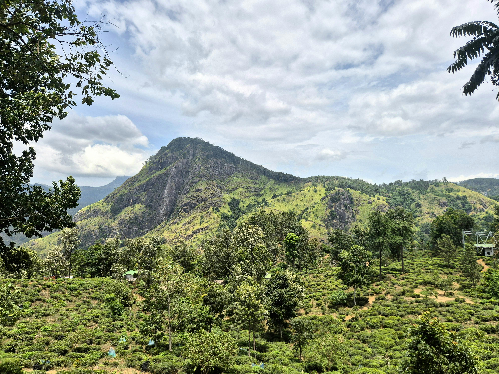

The ultimate hiking challenge in Ella, rewarded with a breathtaking 360-degree panoramic view of the entire valley.
Ella Rock is the most famous and challenging hike in the region. The trail takes you along train tracks, through tea plantations, and finally up a steep woodland path to the summit. Standing over 1,000 meters above sea level, the cliff face offers a dramatic vertical drop and views that stretch all the way to the southern plains on a clear day.
The journey is as rewarding as the destination. You'll pass through quiet settlements and experience the changing landscape of the highlands. It is a must-do for any adventure seeker visiting Sri Lanka's hill country, providing the perfect blend of physical challenge and natural splendor.
Back to Ella Hub